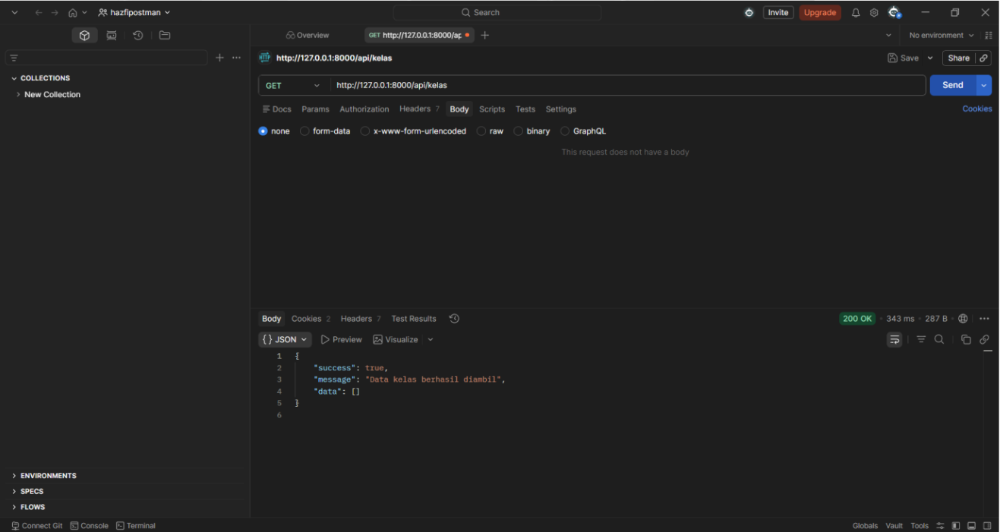
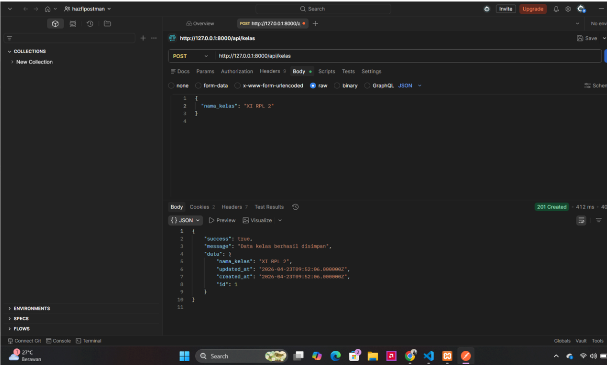
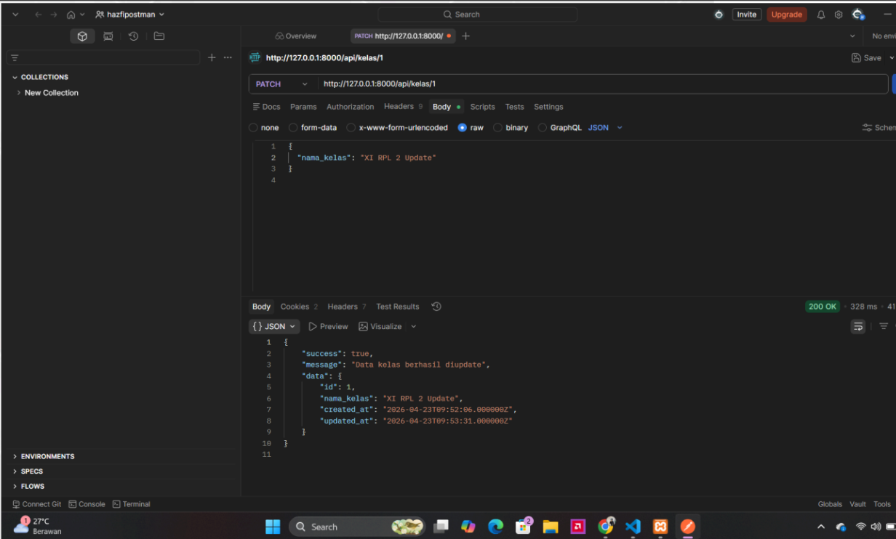
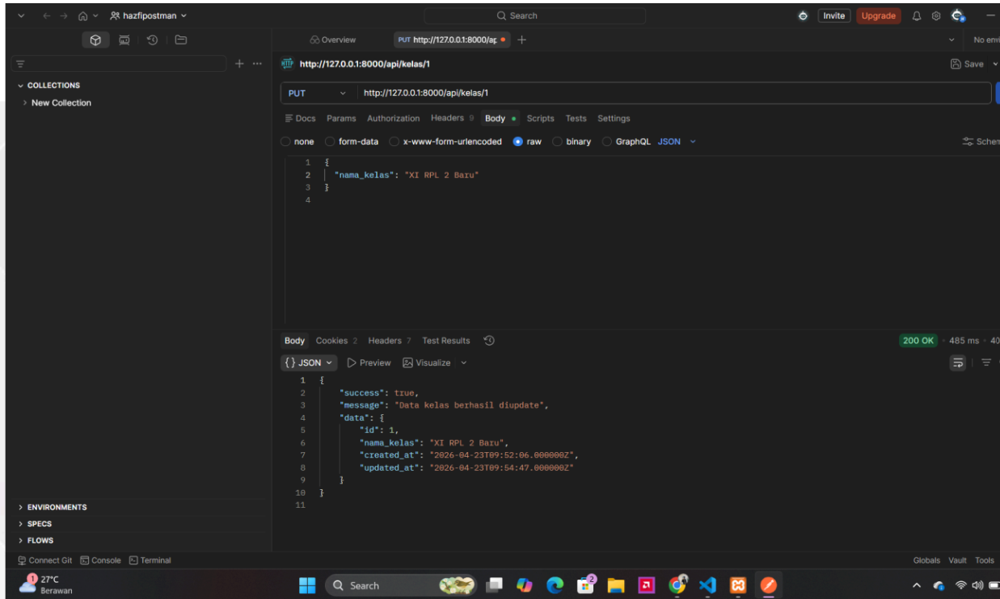
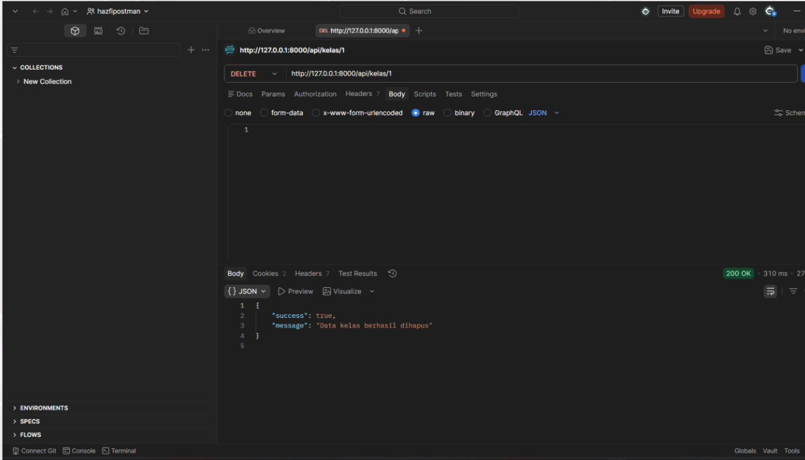

Implementasi API Routes Laravel (Data Kelas)
Pembahasan lengkap mengenai pembuatan RESTful API endpoint untuk manajemen data kelas menggunakan Laravel.
HTTP Method: GET
Mengambil Data Kelas (Index & Show)
Route GET digunakan untuk mengambil data kelas dari database. Pada proyek ini, fungsi index dipakai untuk menampilkan semua data kelas, sedangkan fungsi show dipakai untuk menampilkan satu data kelas secara spesifik berdasarkan ID.
routes/api.php
Route::get('/kelas', [KelasApiController::class, 'index']);
Route::get('/kelas/{id}', [KelasApiController::class, 'show']);HTTP Method: POST
Menambahkan Data Kelas Baru (Store)
Route POST digunakan untuk menambahkan data kelas baru ke dalam database. Pada route ini, fungsi store dipakai untuk menerima dan menyimpan data baru yang dikirimkan dari client atau aplikasi penguji seperti Postman.
routes/api.php
Route::post('/kelas', [KelasApiController::class, 'store']);HTTP Method: PUT / PATCH
Mengubah Data Kelas (Update)
Untuk proses pembaruan data, kita dapat menggunakan dua metode yang memiliki fungsi sedikit berbeda:
- PATCH: Digunakan untuk mengubah sebagian data kelas yang sudah ada berdasarkan ID.
- PUT: Digunakan untuk mengubah seluruh data kelas yang sudah ada berdasarkan ID.
Kedua method ini diarahkan ke fungsi yang sama di controller, yaitu fungsi update.
routes/api.php
Route::patch('/kelas/{id}', [KelasApiController::class, 'update']);
Route::put('/kelas/{id}', [KelasApiController::class, 'update']);HTTP Method: DELETE
Menghapus Data Kelas (Destroy)
Route DELETE digunakan untuk menghapus data kelas dari database. Route ini membutuhkan parameter berupa ID kelas target, dan akan diproses oleh fungsi destroy yang ada di dalam controller.
routes/api.php
Route::delete('/kelas/{id}', [KelasApiController::class, 'destroy']);Screenshot Tugas
Bukti Screenshot Postman
Screenshoot request GET pada POSTMAN beserta dengan hasilnya:

Screenshot Tugas
Bukti Screenshot Postman
Screenshoot request POST pada POSTMAN beserta dengan hasilnya:

Screenshot Tugas
Bukti Screenshot Postman
Screenshoot request PATCH pada POSTMAN beserta dengan hasilnya:

Screenshot Tugas
Bukti Screenshot Postman
Screenshoot request PUT pada POSTMAN beserta dengan hasilnya:

Screenshot Tugas
Bukti Screenshot Postman
Screenshoot request DELETE pada POSTMAN beserta dengan hasilnya:
